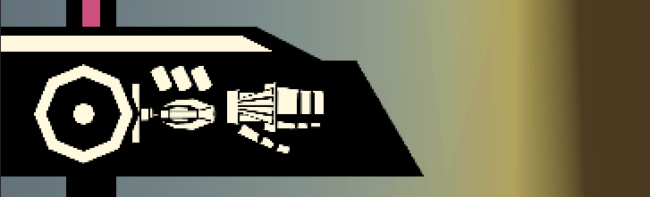

User Interface
Menu
My goal was to design menus which could be set up easily and have a variety of transitions play on certain actions, without the need to animate through the use of Tweens. I set this up by creating a transition class which can be placed on any gameobject to trigger a tween to be played, the tween is highly adjustable through its parameters, allowing various movements, scalings and easings to be used. On certain menu actions these transitions can then be played, such as switching sub-menu type.
The buttons also use their own class to display their animations through tweens in a similar manner.
Player HUD
Most of the UI is still in very early stages so currently the player only has 2 indicators, a health bar and a grapple charge display. The health bar script simply subscribes to the current actor being controlled, read via the ActorManager, it then listens to the actor's OnHealthChange event and will play the corresponding tweens for the damage or healing effects. The grapple charge pips are similar but instead attempt to get the grapple hook script from the actor, otherwise they'll disable.